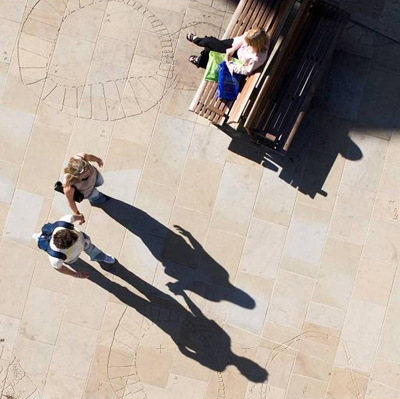
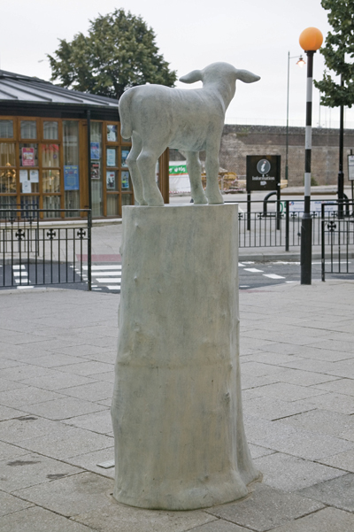
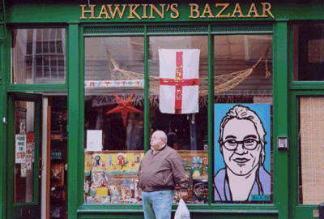
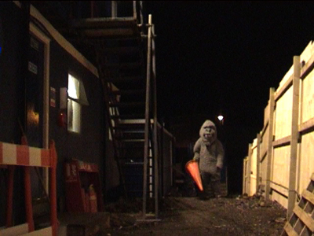
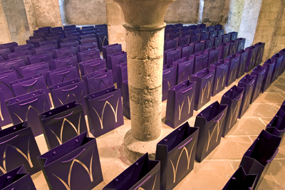
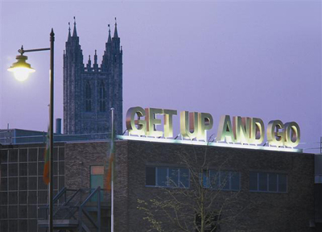

InSite Arts and Hazel Colquhoun were appointed to support Land Securities and Canterbury City Council in developing a public art strategy for the development at Canterbury Whitefriars. Extensive partnership working and liaison with the City Council took place to ensure the effective delivery of a range of permanent and temporary works of art.
A detailed strategy was developed that embraced the potential of permanent work within the scheme but also how a temporary art programme could contribute to the awareness raising initiatives about the scheme and to give voices to residents and visitors to the city. The temporary programme ran through the life of the development and also included four temporary installations by artist Janet Hodgson during the research period for her permanent work for the main public space within the development, Whitefriars Square.
Janet's permanent work celebrates the artistry of archaeology that both records and interprets on-site archaeological findings. It consists of sandblasted drawings in the york stone paving slabs of Whitefriars Square. The sandblasted drawings are exact copies of the stratigraphic archaeological drawings of the pits or holes that were found on the site during the excavations, enlarged to full size and positioned exactly where they were discovered. The work was developed during more than a year's observations of the archaeological excavation and recording that took place on the site. Janet was fascinated not only in what the archaeologists found, but also in the detail of the excavation process, what the archaeologists considered important and how they 'drew' time. She was also struck by the archaeological practice of removal - a direct inversion of the normal process of construction.
The drawings reproduced on the paving stones were executed with exacting precision, all using the agreed form of notation or language, yet each one retains the hand of the person who drew them They serve as permanent reminders of the many dedicated and talented individuals who worked on the site.

The second permanent art installation by Kenny Hunter was installed in St George's Lane in August 2005.The bronze work addresses a diverse range of historical, religious and contemporary social currents, through its singular sculptural form - a lamb standing on a tree stump. This organic, pastoral composition contrasts strongly with its location, a dynamic city centre site. The result is an intimate, tactile and ancient form placed within a busy public environment of modernity. Kenny Hunter's inspiration for the work includes William Blake's 'Jerusalem', the hymn being synonymous with English identity and yearning for social justice. Kenny further considers the contemporary social condition that sees England reassess and adjust itself to a rapidly changing political and social environment and what being English means at the beginning of the 21st century.

Simon Grennan and Christopher Sperandio produced ten iconic portraits of real people representing the diversity of social lives around the Whitefriars Development, focussing particularly on personal experiences and points of view of the range of types of people who live and work in the area. They were produced using Grennan & Sperandio's trade-mark cartoon style and were art-directed by each local participant.
These images were painted temporarily onto ten shop and trader windows around the Whitefriars development. A hand-leafleting campaign around the city centre promoted the work. The series of portraits appeared for four weeks.

Holy Mackerel by Susan Collins was the first temporary public installation commissioned. The work consisted of a series of 5 stereo video 'viewfinders' which were placed at various locations around the perimeter of the Whitefriars site, embedded as eyeholes into the hoardings. Using a technique developed by the artist, first used in 'Viewfinder' (2000) passersby could view a 3d (stereo) video version of 'events' beyond the hoarding - creating a 3 dimensional 'window' into the site from a range of vantage points The work functioned 24 hours a day, 7 days a week, automatically switching between the day and night views. By day the 'views' were a straightforward replaying of events as seen (and filmed) from the same physical vantage point, the 3d effect giving a hyper or heightened sense of the 'real'.
The daytime scenes included builders using diggers and pile drivers; people walking to and from the onsite canteen and the archaeologists artwork on the 'big dig'.
After dark the 'views' were of the site after the builders had gone home, and on occasion the viewer may have caught a glimpse of something 'else' on site. These glimpses were constructed as rare and varied occurrences - intended to be entertaining and seasonal as well as surprising. The intention was to encourage the viewer to return to the work at different times and in different locations, and for the work to always offer the promise of a fresh experience.

Canterbury based artist, Susan Shaw, created 'Shopping', a project that delved into the interface between consumerism and religion. The installation in Eastbridge Hospital's 'Undercroft' filled the entire floor with a carpet of ecclesiastical purple, luxuriously manufactured, shopping bags, embossed with a silver W and placed in rows like church pews throughout the old pilgrims resting rooms. Each silver logo branded on the bags, seemingly resembled a bishop's mitre (or perhaps a hint at the 'W' of Whitefriars shopping), making poignant references to both the spiritual and consumer cultures of Canterbury, and in turn offering different interpretations for visiting audiences. As one visitor commented;
Consumerism is God - Tesco the temple - But art confronts and gives us a more precious truth.
On the closing day of exhibition, Susan opened the 'Everything Must Go' sale where queues of shoppers spilled out onto the high street waiting to own an art collectors 'must-have' bargain. Over 1000 bags, individually numbered and signed by the artist, were picked-up by 'shoppers' at the sale. Not only taking part in a little retail therapy, shoppers were left to take away the ultimate decision - is this bag to be used as the latest, limited edition accessory? Or should it be treasured as the original, sacred piece of artwork?
 An
essay by Liz Kent on Susan Shaw's work can be downloaded
here »
An
essay by Liz Kent on Susan Shaw's work can be downloaded
here »

Marion's work sought to capture the imagination of the people who live and shop in Canterbury. Through a participatory process that ran for a few weeks during the Autumn 2003 Marion encouraged people to talk about the new development and their feelings about the changing city. Her tool for discussion was the notion of an Idiom a well known saying - with popular meaning - but actually referred to something quite different to its literal meaning
'Get up and Go' was chosen and the location, a building due for demolition. The chosen Idiom related to both the metaphorical progress of the city change, and the literal fate of the building on which it stood.
Each letter stood over 13m high, was illuminated at night and remained in situ until the building was demolished.
